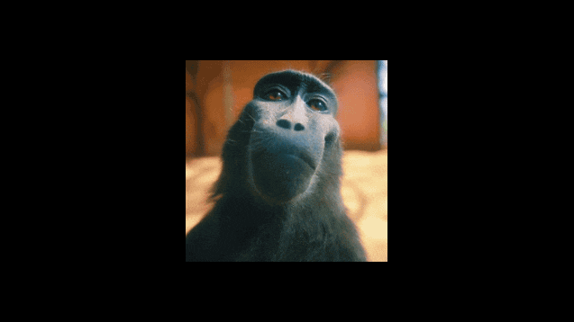

Los primeros días de la travesía de Alex estuvieron marcados por la incertidumbre y el esfuerzo. Cada mañana, antes de que el sol pintara el cielo, se encontraba en el gimnasio local, enfrentándose a un conjunto de pesas y máquinas que le eran prácticamente desconocidas. Los músculos doloridos y la respiración agitada eran testigos de su determinación por superar los límites que él mismo se había impuesto.
La cocina se convirtió en su segundo campo de batalla. Alejándose de las comidas rápidas y los antojos nocturnos, Alex abrazó una dieta equilibrada. Verduras frescas, proteínas magras y carbohidratos complejos se convirtieron en sus aliados. Cada comida se volvió una elección consciente, un paso hacia la revitalización de su cuerpo y mente.
Pero más allá del sudor en el gimnasio y las elecciones nutricionales, la verdadera prueba de autodisciplina radicaba en vencer las voces de la duda que murmuraban en su mente. En esos momentos en que las piernas parecían cansarse y la tentación de abandonar se volvía tentadora, Alex recordaba el propósito detrás de su búsqueda de cambio. La autodisciplina se convirtió en su brújula, guiándolo a través de los desafíos físicos y emocionales que encontró en su camino.